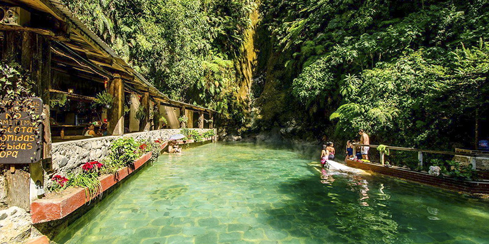

GUATEMALA País de la Eterna Primavera
-
Escuintla- Autopista Palín
Ir a wikipedia -
Sololá- Panajachel
Ir a wikipedia -
Antigual Guatemala- Arco Santa Catalina
Ir a wikipedia -

Antigua Guatemala- Cerro de la cruz
Ir a wikipedia -
Huehuetenango- Laguna Brava
Ir a wikipedia -

Río Dulce- Catillo de San Felipe
Ir a wikipedia -
Alta Verapaz- Semuc Champey
Ir a wikipedia -

Quetzaltenango- Fuentes Georginas
Ver mas informacion -

Petén- Lago de Petén Itzá
Ir a wikipedia -

Santa Rosa, Estero Monterrico
Ver mas infortmacion
Ing.:Ernesto Osoy